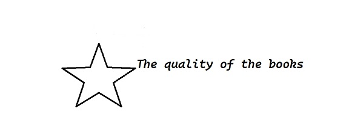

Acasa
Articole
Obiceiuri
Aptitudini
Citate
Carti
Obiceiuri
Cateva obiceiuri ale ale cititorilor
De ce? Pentru ca vreau sa vorbesc deschis despre pasiunea cartilor.
Obiceiul 1
Ai un anumit loc in care citesti? Nu, citesc oriunde prind. De cele mai multe ori in pat sau pe scaunul de la birou, dar daca sunt pe canapea si vreau sa citesc nu ma opreste nimic.
Obiceiul 2
Folosesti semn de carte sau o bucata de hartie? La cate semne frumoase am din Carturesti ar fi aiurea sa nu le folosesc. Deci nu folosesc niciodata bucati de hartie sau alte foi.
Obiceiul 3
Te opresti din citit oricand sau trebuie sa termini capitolul? De cele mai multe ori trebuie sa termin capitolul pentru ca altfel pierd firul ideii.Totusi, cand sunt la scoala ma opresc oricand pentru ca nu am niciodata destul timp sa termin capitolul.
Obiceiul 4
Asculti muzica sau te uiti la televizor in timp ce citesti? Uneori imi tin televizorul pornit pe fundal, daca ma prinde cartea.Daca nu ma prinde, ma distrage usor orice sunet si mai bine evit sa il pornesc. Muzica ascult doar la scoala pentru ca este mult zgomot, dar nici atunci mereu.
Obiceiul 5
Citesti doar o carte sau mai multe carti in paralel? Citesc doar una, daca citesc mai mult in paralel nu e prea eficient si nu o termin pe niciuna.